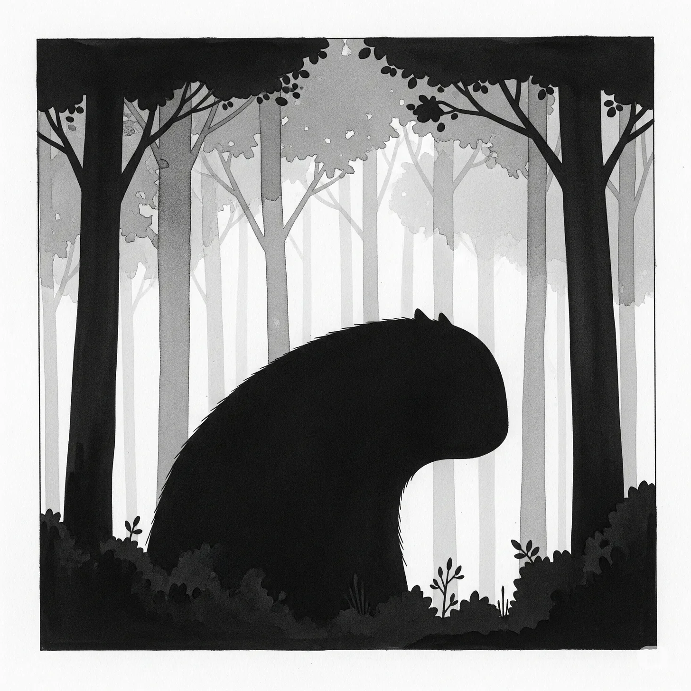

괴물들은 항상 파괴만 하는 것이 아니라는 사실을 그들은 발견했다.
[Monsters, they discovered, do not always destroy.]
모든 것은 깊은 숲 속 곳곳에 셀 수 없이 흩어진 뼈들로 시작되었다. 자연의 무작위적 잔혹함을 거스르는 패턴으로 배열된 뼈들이었다. 낙엽 사이에서 썩어가도록 버려진 사냥감의 부서지기 쉬운 잔해가 아니라, 완전히 다른 무언가였다: 수십 년간의 고독한 창조로부터 나타난 의도적인 조각품들이, 숨겨진 숲의 깊은 곳에서 마치 담아낼 수 없을 만큼 많은 비밀들처럼 쏟아져 나오고 있었다.
[It began with the bones scattered beyond counting through the deep forest, arranged in patterns that defied the random cruelty of nature. Not the brittle remains of hunted prey left to rot among fallen leaves, but something else entirely: deliberate sculptures emerging from decades of solitary creation, spilling from the forest’s hidden depths like secrets too numerous to contain.]
우연히 그것을 발견한 첫 번째 마을 사람은 늙은 마렌이었다. 베리 물이 든 그녀의 손가락이 익숙한 길에서 너무 멀리 떠나버린 것이었다. 그녀는 자작나무 껍질처럼 창백한 얼굴로 돌아왔고, 사시나무 잎처럼 떨면서 성당 같은 그림자 속에서 뼈처럼 하얗게 빛나는 성소에 대해 속삭였다. “짐승의 작품이에요.” 그녀의 목소리가 주점의 연기 자욱한 공기를 간신히 뚫고 나왔다. “하지만 믿을 수 없을 만큼 아름다워요.”
[The first villager to stumble upon one was old Maren, whose berry-stained fingers had wandered too far from familiar paths. She returned pale as birch bark, trembling like aspen leaves, whispering of a shrine that glowed bone-white in the cathedral shadows. “A beast’s work,” she said, her voice barely threading through the tavern’s smoky air, “but beautiful beyond believing.”]
호기심은 열병보다 빠르게 퍼진다. 다음 새벽이 되자, 쇠스랑과 등불로 무장한 남자들 무리가 가시덤불과 고사리를 헤치며 숲의 신비로운 심장부를 향해 나아갔다. 그들은 대학살을, 피와 힘줄로 끈적한 소굴을 예상했다. 하지만 그들이 발견한 것은 그들을 돌처럼 말문이 막히게 만들었다.
[Curiosity spreads faster than fever. By the next dawn, a knot of men armed with pitchforks and lanterns pushed through brambles and bracken toward the forest’s mysterious heart. They expected carnage, a den thick with blood and sinew. What they found struck them speechless as stones.]
달빛이 숨쉬는 공터, 그 중앙에는 그들의 숨을 멎게 만드는 조각품이 서 있었다: 뒷다리로 일어선 수사슴이 나무 꼭대기를 향해 얼어붙은 강처럼 나선을 그리며 뻗은 뿔을 가지고 있었다. 뼈들은 겨울 서리처럼 하얗게 빛났으며, 자연의 무작위적 조립을 조롱하는 정밀함으로 맞춰져 있었다. 각각의 갈비뼈는 정확히 있어야 할 곳에서 곡선을 그렸고, 각각의 척추뼈는 다음 척추뼈에 완벽하게 들어맞았다. 그것은 죽음으로부터 태어난 건축물이었지만, 어떻게든 숨쉬는 그 어떤 것보다도 더 살아있었다.
[The clearing breathed with moonlight, and there in its center stood a sculpture that made their breath catch: a stag rearing on hind legs, antlers spiraling like frozen rivers toward the canopy. The bones gleamed white as winter frost, fitted together with precision that mocked nature’s random assembly. Each rib curved exactly where it should; each vertebra nested perfectly into the next. It was architecture born from death, yet somehow more alive than anything breathing.]
몇 주 동안 아무도 감히 돌아가지 못했다. 꿀처럼 진한 속삭임이 마을을 가득 채웠다: 남자들을 집까지 따라오는 저주, 부주의한 자들을 올가미로 잡기 위해 아름다운 덫을 만드는 악마들, 영혼을 독살하면서 눈을 유혹할 수 있는 어둠의 마법. 하지만 그때 두 번째 발견이 있었다: 날아오르기 직전의 순간에 얼어붙은 것처럼 날개를 펼친 채 비행 중에 잡힌 새가 강둑 근처 바위 위에 앉아 있었던 것이다. 그 깃털들은 나무껍질과 뼈 조각으로 조각되어 있었는데, 너무나 얇아서 고요한 공기 속에서도 펄럭이는 것처럼 보였다.
[For weeks, none dared return. Whispers thick as honey filled the village: curses that followed men home, demons crafting beautiful traps to snare the unwary, dark magic that could seduce the eye while poisoning the soul. But then came the second discovery: a bird caught mid-flight, wings outstretched as though frozen in the instant before soaring, perched atop a boulder near the riverbank. Its feathers were carved from bark and bone shards so thin they seemed to flutter in still air.]
그 생물은 단 한 번만 인간의 눈에 자신을 드러냈다. 사냥꾼 로릭은 황혼 무렵 늪지대 가장자리 근처에서 작업에 몰두한 채 웅크리고 있는 거대한 그림자를 엿보았다고 맹세했다. 그것의 손은 으르렁거리는 늑대로 보이는 것을 조립하면서 놀라운 섬세함으로 움직였고, 각각의 송곳니는 보석상이 다이아몬드를 세팅하는 정성으로 배치되었다. “자연스럽지 않았어요.” 로릭이 그날 밤 에일과 경이로움으로 굵어진 목소리로 중얼거렸다. “하지만 사악하지도 않았어요. 그냥… 외로워 보였어요.”
[The creature revealed itself only once to mortal eyes. Rorik the hunter swore he glimpsed it at dusk, a hulking shadow hunched over its work near the marshlands’ edge. Its hands moved with startling delicacy as they assembled what appeared to be a wolf mid-snarl, each fang placed with the care of a jeweler setting diamonds. “It wasn’t natural,” Rorik muttered that night, his voice thick with ale and wonder. “But it wasn’t evil either. Just… lonesome.”]
그러다 아이가 나타났다.
[Then came the child.]
릴라는 일곱 번의 여름과 오직 아이들만이 보이지 않는 갑옷처럼 지니고 다니는 두려움 없음을 가지고 있었다. 어느 날 아침 어른들이 느끼는 법을 잊어버린 호기심에 이끌려 숲 속으로 걸어 들어간 그녀는 저녁의 보랏빛이 찾아와도 돌아오지 않았다. 해질녘이 되어서야 머리에 들꽃을 땋고 마을 광장을 깡충깡충 뛰어다니며 나타난 그녀는 어른들을 벙어리로 만드는 이야기들을 가지고 있었다.
[Lila possessed seven summers and the fearlessness that only children carry like invisible armor. She wandered into the woods one morning, drawn by curiosities adults had forgotten how to feel, and did not return by evening’s purple arrival. When she finally appeared at sunset, skipping through the village square with wildflowers braided in her hair, she carried stories that struck the adults dumb.]
“숲에 큰 친구가 있어요.” 그녀가 걱정하는 부모들에게 발표했다. 물이 제자리를 찾아가듯 자연스럽게 어머니 무릎에 앉으며 말했다. “그 친구는 오래된 뼈와 부서진 것들로 가장 멋진 동물들을 만들어요. 그리고 너무너무 외로워해요.”
[“There’s a big friend in the forest,” she announced to her worried parents, settling into her mother’s lap as naturally as water finding its level. “It makes the most wonderful animals from old bones and broken things. And it’s so very lonely.”]
그녀는 다음 날도, 그 다음 날도 돌아왔고, 매번 꿈에서 짜낸 것 같은 이야기들을 가져왔다: 그 생물이 긴 밤을 통해 어떻게 작업하는지, 거대한 그 손이 할머니의 손길처럼 부드러운지; 어떻게 숲이 버린 것들만을 모아서 죽음의 버려진 것들에 새로운 생명을 불어넣는지; 어떻게 말은 하지 않지만 그녀가 좋아하는 꽃들에 대해 재잘거리거나 어머니가 불러주는 자장가를 흥얼거릴 때 깊은 관심으로 듣는지에 대해서.
[She returned the next day, and the next, each time bringing tales that seemed spun from dreams: how the creature worked through long nights, its massive hands gentle as a grandmother’s touch; how it gathered only what the forest had discarded, breathing new life into death’s cast-offs; how it never spoke but listened with profound attention when she chattered about her favorite flowers or hummed the lullabies her mother sang.]
“나쁘지 않아요.” 어느 날 저녁 어머니가 그녀의 작은 몸 주위에 이불을 덮어주며 릴라가 주장했다. “그냥 자신이 무엇인지 말고는 다른 것이 되는 법을 모를 뿐이에요.”
[“It’s not wicked,” Lila insisted one evening as her mother tucked quilts around her small frame. “It just doesn’t know how to be anything else but what it is.”]
하지만 두려움은 부모의 마음에서 이성보다 더 깊이 흐른다. 마을 사람들이 자신들의 아이들의 안전이 위태롭다는 것을 알게 되었을 때, 공포가 독이 든 꽃처럼 피어났다. 어머니들은 어린 자식들을 더 가까이 끌어안았고, 아버지들은 침울한 결심으로 도끼를 갈았다. 속삭이는 논쟁들이 격해졌다: 조각품들을 태워버리고, 괴물을 사냥하고, 뼈로 만든 동물들이 불충분한 오락거리라고 결정하기 전에 그것을 그들의 경계선에서 몰아내자는 것이었다.
[But fear runs deeper than reason in parents’ hearts. When the village learned that their children’s safety hung in the balance, panic bloomed like poisonous flowers. Mothers clutched their young ones closer; fathers sharpened axes with grim determination. The whispered debates grew heated: burn the sculptures, hunt the monster, drive it from their borders before it decided that bone animals were insufficient entertainment.]
마침내 횃불을 든 군중을 모은 것은 대장장이 가레스였다. 그의 얼굴은 매일 두드리는 쇠처럼 단단하게 굳어있었다. “짐승이 대가 없이 아이들과 친구가 되는 법은 없다.” 그가 눈에 불꽃이 춤추며 선언했다. “우리 아이들에게서 이야기 이상의 것을 빼앗기 전에, 오늘 밤 이것을 끝내자.”
[It was Gareth the blacksmith who finally gathered the torch-bearing crowd, his face set hard as the iron he hammered daily. “No beast befriends children without wanting something in return,” he declared, flames dancing in his eyes. “We end this tonight, before it takes more than stories from our young ones.”]
스무 명의 남자들이 그를 따라 달빛 아래 숲으로 들어갔다. 횃불들이 화난 별들처럼 깜박거렸다. 그들은 묘사된 그대로의 공터를 발견했다: 웅장한 수사슴 조각품이 그들의 깜박이는 빛 속에서 빛나고 있었고, 점점 늘어나는 뼈처럼 하얀 생물들의 동물원에 둘러싸여 있었다. 각각의 작품은 불가능한 섬세함의 걸작이었고, 말보다 더 크게 말하는 사랑으로 조각되어 있었다.
[Twenty men followed him into the moonlit forest, torches sputtering like angry stars. They found the clearing exactly as described: the magnificent stag sculpture gleaming in their flickering light, surrounded by a growing menagerie of bone-white creatures. Each piece was a masterwork of impossible delicacy, carved with love that spoke louder than words.]
가레스는 횃불을 수사슴의 나선형 뿔을 향해 들어올렸다. 아름다움을 재와 불씨로 만들 준비가 되어 있었다. 그의 추종자들은 원을 그리며 서서 지도자의 결정적인 타격을 기다렸다. 하지만 화염의 빛이 조각품의 완벽한 곡선을 가로질러 춤추자, 대장장이의 표정에 무언가 변화가 일어났다.
[Gareth raised his torch toward the stag’s spiraling antlers, ready to reduce beauty to ash and ember. His followers formed a circle, waiting for their leader’s decisive strike. But as flame-light danced across the sculpture’s perfect curves, something shifted in the blacksmith’s expression.]
그의 손이 떨리기 시작했다.
[His hand began to tremble.]
횃불이 흔들렸고, 그 굶주린 불꽃이 수사슴을 살아있는 것처럼 보이게 하는 거친 그림자들을 만들어냈다. 가레스는 자신 앞에 서 있는 것을 진정으로 보았을 때 목구멍에서 숨이 막혔다: 단순한 장식품이 아니라, 수 세기의 외로운 밤들로부터 태어난 예술품이었고, 각각의 뼈는 그것이 한때 담고 있던 생명에 대한 경외심으로 놓여 있었다. 그 조각품은 비어있는 눈구멍으로 그를 다시 바라보았는데, 어떻게든 대부분의 살아있는 눈들보다 더 많은 영혼을 담고 있었다.
[The torch wavered, its hungry fire casting wild shadows that seemed to bring the stag to life. Gareth’s breath caught in his throat as he truly saw what stood before him: not mere decoration, but art born from centuries of lonely nights, each bone placed with reverence for the life it once contained. The sculpture gazed back at him with empty sockets that somehow held more soul than most living eyes.]
다른 마을 사람들은 자신감 있던 지도자가 아름다움에 대한 자신의 인식과 싸우는 것을 지켜봤다. 그의 어깨가 축 늘어졌고, 그의 자세는 공격적인 확신에서 경외심에 가까운 무언가로 바뀌었다. 그래도 의무가 그의 가슴속에서 경이로움과 싸우고 있었다. 아이들의 안전은 행동을 요구했고, 비록 그 행동이 신성모독처럼 느껴져도 말이다.
[The other villagers watched their confident leader struggle against his own recognition of beauty. His shoulders sagged; his stance shifted from aggressive certainty to something approaching awe. Still, duty warred with wonder in his chest. Children’s safety demanded action, even if that action felt like sacrilege.]
가레스는 떨리는 손을 억지로 앞으로 내밀었다. 횃불이 한숨 같은 소리와 함께 뿔뼈에 닿았다.
[Gareth forced his trembling hand forward. The torch touched antler bone with a sound like sighing.]
불꽃이 즉시 붙었고, 끔찍한 열망으로 조각품의 완벽한 곡선을 따라 달려나갔다. 하지만 첫 번째 연기 줄기가 피어오르기 시작하자, 대장장이는 마치 자신이 화상을 입은 것처럼 뒤로 물러났다. 그는 뒤로 비틀거렸고, 자신의 파괴적인 솜씨가 대체 불가능한 아름다움을 소멸시키기 시작하는 것을 보며 공포가 그의 얼굴을 씻어내렸다.
[Flame caught immediately, racing along the sculpture’s perfect curves with terrible eagerness. But as the first wisps of smoke began to rise, the blacksmith recoiled as though burned himself. He stumbled backward, horror washing across his features as he watched his own destructive handiwork begin to consume irreplaceable beauty.]
갑작스러운 바람 돌풍이 공터를 휩쓸며, 불꽃이 튄 것만큼 빠르게 화염을 꺼뜨렸다. 조각품은 그을린 뿔 끝 하나만 빼고는 온전히 서 있었다. 경이로움이 소멸에 얼마나 가까이 갔었는지를 표시하는 영구적인 상처였다.
[A sudden gust of wind swept through the clearing, snuffing flames as quickly as they had sparked. The sculpture stood intact save for one charred antler tip, a permanent scar marking how close wonder had come to obliteration.]
횃불이 가레스의 감각을 잃은 손가락에서 떨어졌다. 갑작스러운 어둠 속에서, 스무 명의 남자들이 자신들이 거의 파괴할 뻔했던 것과, 아름다움을 살해할 수 있는 자신들의 능력이 적나라하게 드러난 것에 얼어붙어 서 있었다. 말없이 그들은 돌아서서 공터에서 도망쳤고, 조각품들만이 그들의 수치심을 지키는 파수꾼으로 남겨두었다.
[The torch fell from Gareth’s nerveless fingers. In the sudden darkness, twenty men stood frozen by what they had almost destroyed, their own capacity for beauty’s murder revealed in stark detail. Without words, they turned and fled the clearing, leaving the sculptures to stand sentinel over their shame.]
그날 밤 이후, 마을은 속삭임과 조심스러운 시선들로 스스로를 변화시켰다. 릴라가 다음번에 숲으로 모험을 떠났을 때, 그녀는 상처 입은 수사슴 옆에서 기다리고 있는 그 생물을 발견했다. 거대한 손가락들이 슬픔에 가까운 무언가로 그을린 뿔을 따라 그었다. 그녀는 작은 손을 그것의 털로 덮인 팔에 올려놓았고, 자신의 아버지가 횃불을 들고 느꼈던 공포와 같은 떨림을 느꼈다.
[After that night, the village transformed itself in whispers and careful glances. When Lila next ventured into the forest, she found the creature waiting beside its scarred stag, massive fingers tracing the blackened antler with something approaching grief. She placed her small hand on its fur-covered arm and felt trembling that matched her own father’s torch-bearing terror.]
“그들이 무서워해요.” 그녀가 속삭였다. “하지만 당신을 무서워하는 게 아니에요. 자기 자신들을 무서워하는 거예요.”
[“They’re afraid,” she whispered. “But not of you. They’re afraid of themselves.”]
신뢰가 조심스러운 봄꽃처럼 피어나기 시작하기까지 몇 주가 지났다. 릴라는 뜻밖의 대사가 되어, 외로움이 연결을 찾는다는 보편적인 언어 외에는 공통 언어가 없는 세계들 사이에서 메시지를 전달했다. 그녀는 그 생물의 온순함, 그녀의 이야기들에 대한 조심스러운 관심, 이미 부서지거나 잊혀진 것들만을 모으는 그 방식에 대해 이야기했다.
[Weeks passed before trust began to bloom like tentative spring flowers. Lila became an unlikely ambassador, carrying messages between worlds that had no common language except the universal tongue of loneliness seeking connection. She spoke of the creature’s gentleness, its careful attention to her stories, the way it gathered only what was already broken or forgotten.]
전환점은 릴라가 자신의 숲 친구를 설득하여 마을을 위해 특별히 무언가를 만들도록 했을 때 찾아왔다: 그들의 두려움이 파놓은 심연을 연결할 선물을 만들도록 한 것이었다. 조심스러운 몇 주간의 협력을 통해, 릴라가 의심스러운 인간들과 오해받는 예술가 사이의 연락책 역할을 하는 동안 그 생물은 자신의 걸작을 위해 노동했다.
[The turning point arrived when Lila convinced her forest friend to create something specifically for the village: a gift to bridge the chasm their fear had carved. Through careful weeks of collaboration, the creature labored on its masterpiece while Lila served as liaison between suspicious humans and misunderstood artist.]
봄이 완전히 찾아와 숲을 불가능한 초록빛으로 칠했을 때, 마을 사람들은 경이로움을 목격하라는 초대를 받았다. 가장 완고한 회의론자들조차 고대 참나무의 영역으로 들어서면서 말문이 막힌 채로 서 있게 되었다. 그 생물은 숨과 이성을 모두 앗아가는 조각품의 정원을 만들어냈다: 보이지 않는 초원을 뛰어다니는 사슴들; 영원한 노래를 부르려는 자세의 새들; 상상의 달 아래 웅크린 여우들. 돌로 만든 꽃들이 그들 사이에서 피어났는데, 너무나 정교한 정밀함으로 조각되어 생명으로 맥박치는 것 같았다.
[When spring’s full arrival painted the forest in impossible greens, the villagers received their invitation to witness wonder. Even the most hardened skeptics found themselves struck silent as they entered the ancient oak’s domain. The creature had crafted a garden of sculptures that stole breath and reason alike: deer leaping through invisible meadows; birds poised in eternal song; foxes curled beneath imaginary moons. Stone flowers bloomed among them, carved with such intricate precision they seemed to pulse with life.]
상처 입은 수사슴이 정원의 중심에 서 있었고, 그 그을린 뿔은 아름다움이 파괴에 얼마나 가까이 갔었는지를 상기시켜주었다. 마을 사람들의 눈이 그 검게 탄 뼈를 따라 움직였고, 공통된 수치심과 새로 발견한 경이로움을 느꼈다.
[The scarred stag stood at the garden’s heart, its charred antler a reminder of how close beauty had come to destruction. Village eyes traced that blackened bone with shared shame and newfound wonder.]
거대한 참나무의 뻗어나간 가지들 아래에서 경외감에 빠져 서 있을 때, 릴라는 어른들의 마음이 완전히 이해할 수 없을 만큼 순수한 기쁨으로 조각품들 사이에서 춤을 추었다. 하지만 그들이 돌아서서 뜻밖의 은인에게 감사를 표하려 했을 때, 그림자는 오직 공허함만을 품고 있었다. 그 생물은 아침 안개처럼 사라져버렸고, 마침내 목적을 찾은 외로운 창조력에 대한 증언만을 남겨두었다.
[As they stood in awe beneath the oak’s sprawling branches, Lila danced among the sculptures with joy too pure for adult hearts to fully comprehend. But when they turned to thank their unlikely benefactor, shadows held only emptiness. The creature had vanished like morning mist, leaving behind only its testament to lonely creativity finally finding purpose.]
계절이 바뀌었다. 그 생물은 다시는 자신을 드러내려 돌아오지 않았지만, 그것의 부재는 존재가 할 수 있었던 것보다 더 깊은 의미를 새겨놓았다. 마을은 두려움이나 폭력을 통해서가 아니라, 괴물성에서 태어난 아름다움의 인식을 통해, 두려움 없는 아이가 우정을 제안하기까지 오직 고독만을 알았던 손들에 의해 창조된 예술을 통해 변화했다.
[Seasons turned. The creature never returned to show itself, but its absence carved meaning deeper than presence ever could. The village transformed not through fear or violence, but through recognition of beauty born from monstrosity, art created by hands that had known only solitude until a fearless child offered friendship.]
어떤 사람들은 달이 없는 밤에 숲의 가장 깊은 곳에서 희미한 소리들이 울려 퍼지는 것을 들을 수 있다고 주장했다: 뼈가 돌에 부딪히는 부드러운 긁는 소리, 참을성 있는 리듬을 찾는 도구들의 소리. 어둠 속 어딘가에서 그 생물은 자신의 고대 작업을 계속하고 있었고, 더 이상 완전히 혼자가 아니었다. 한 아이의 웃음소리가 외로움이 영구적일 필요가 없다는 것을, 괴물들조차 파괴하기보다는 창조할 수 있다는 것을 가르쳐주었다.
[Some claimed they could hear faint sounds echoing from the forest’s deepest reaches on moonless nights: the soft scrape of bone against stone, tools finding their patient rhythm. Somewhere in the darkness, the creature continued its ancient work, no longer entirely alone. A child’s laughter had taught it that loneliness need not be permanent, that even monsters could create rather than destroy.]
정원은 남아있었고, 자신들이 거의 잃을 뻔했던 것을 소중히 여기는 법을 배운 마을 사람들이 돌보았다. 그리고 검게 탄 뿔은 아름다움의 가장 큰 적이 증오가 아니라, 평범한 사람들을 비범한 파괴로 이끄는 두려움이라는 것을 영구적으로 상기시켜주는 역할을 했다.
[The garden remained, tended by villagers who had learned to treasure what they had almost lost. And the blackened antler stood as perpetual reminder that beauty’s greatest enemy is not hatred, but the fear that drives ordinary people to extraordinary destruction.]
결국 그들은 괴물들도 인간들과 마찬가지로 단순히 자신들의 외로움이 목격되고 자신들의 창조물이 이해받기를 원한다는 것을 발견했다.
[In the end, they discovered that monsters, like humans, simply want their loneliness witnessed and their creations understood.]